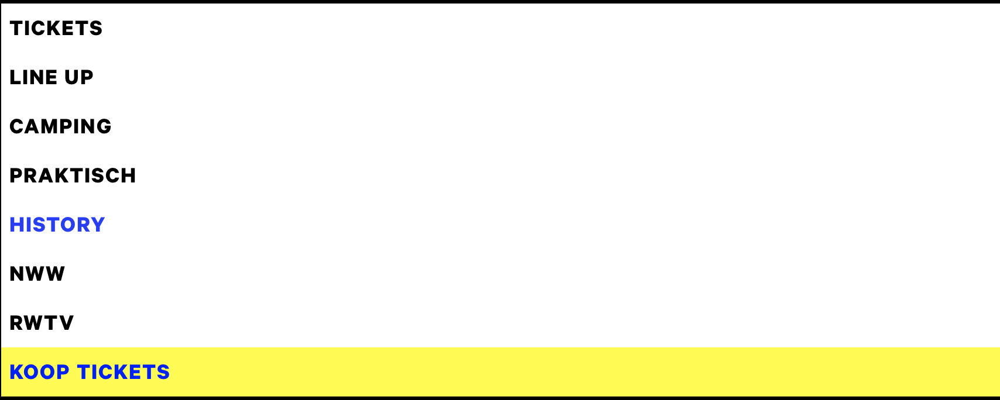
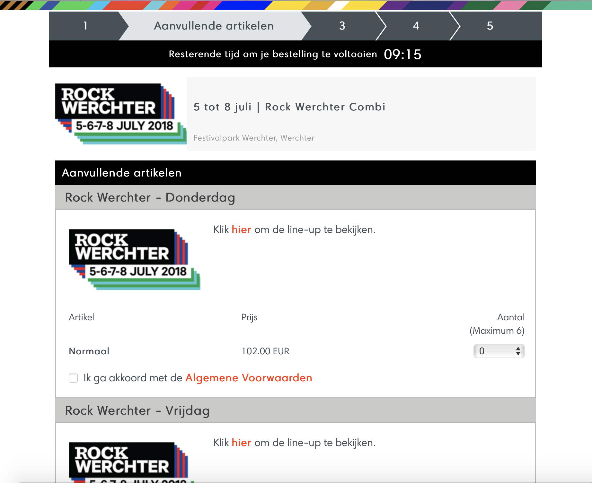

Het is zeer handig bij de website van werchter dat men bij de navigatie in het begin zeer duidelijk weet waar men naartoe gaat.
De betaling is zeer gemakkelijk en gebeurt in 5 stappen.
Positief is ook dat men een festivalticket samen kan nemen met een slaapplaats. Zodat men dit niet apart hoeft te betalen.
Bij elk onderdeel van de website wordt er zeer duidelijke informatie gegeven, men vindt ook alles zeer duidelijk terug en op al je vragen wordt een antwoord gegeven. Als je daarna nog meer info nodig hebt staan alle contactgegevens op elke pagina onderaan.
Men moet echt heel veel doorklikken om op een bepaalde pagina te geraken.Voor men een ticket voor de camping kan boeken moeten we maar liefst 10 keer klikken voordat men een ticket van een bepaalde camping kan bemachtigen. Het vele doorklikken van de ene pagina naar de andere geeft een heel onoverzichtelijk gevoel voor jezelf. Door de zeer verwarrende structuur van de site ontdenk je nog vele andere zaken dat je daarvoor niet had gezien wat op de duur maakt dat je niet meer weet wat je nu al gelezen hebt en wat niet.
Heel verwarrend is dat je een bepaalde datum kiest en daarna nog een lijst krijgt van aanvullende artikelen.Dit is niet nodig, want de koper heeft zijn keuze al gemaakt en dit maakt het ingewikkeld.
Er is een bepaalde tijd waarin je betaling moet gebeurt zijn. Dit is zeer stressgevend. Hierbij krijgt men een heel aanvallend gevoel en is er druk
Balaton Sound begint met een zeer duidelijke paginastructuur. Bovenaan kan men klikken waar men naartoe zou willen. Als men hier opdrukt krijgt men een zeer duidelijke weergaven wat hieronder hoort. Zo hoeft men niet heel de tijd door te klikken, maar kan meteen naar waar men wilt.

De pagina's zijn simpel opgebouwd en men snapt de structuur, zo wordt het niet ingewikkeld voor jezelf en weet je waar je zit op de website. Alle mogenlijkheden worden ook zeer eenvoudig op een rij gezet. Met 1 klik weet men meer wat een bepaalde camping inhoudt. Balaton Sound biedt ook aan je festivaltickets, Je slaapplek, je traveltickets... in 1 klik samen te bestellen en te betalen

Er is jammer genoeg maar 1 betaalmogenlijkheid namenlijk Paylogic. Hiervoor moet je dan ook nog eens een account hebben/maken.